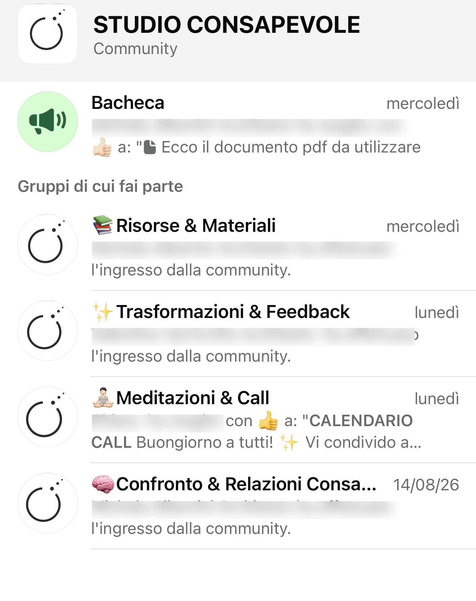

Guarda come funziona la community e come sfruttarla al meglio
Perfetto! Ti avviso personalmente quando si libera un posto.
"E' incredibile, ma alla fine di ogni confronto mi sento ricentrata. Le riflessioni di Andrea portano a quella profondità che tanto cerco in questo momento."
— Alessia · Membro di Studio Consapevole
Studio Consapevole è la community privata su Skool pensata per architetti e interior designer che vogliono lavorare con più struttura, chiarezza e serenità. Un ambiente concreto e umano, dove confrontarti con altri professionisti e costruire un metodo di lavoro sostenibile nel tempo.

Ogni mese la community lavora su uno o più pilastri, tra contenuti, esercizi, confronto e supporto tra pari.
Struttura
Organizzare attività, processi e priorità.
Tempo
Recuperare tempo eliminando dispersioni e inefficienze.
Utili
Migliorare la gestione economica e la redditività dello studio.
Direzione
Definire obiettivi chiari e un piano d'azione concreto.
Identità
Rafforzare il posizionamento professionale.
Ordine Mentale
Ridurre stress e sovraccarico per lavorare con più serenità.
«Alla fine di ogni confronto mi sento ricentrata. Le riflessioni di Andrea portano a quella profondità che tanto cerco in questo momento.»
Alessia
Architetto
«Sembra di stare in un gruppo di amici, c'è molto ascolto e un clima rilassato. Andrea dà sempre spunti pratici da mettere in pratica nell'immediato.»
Simona
Architetto
«Giovedì per la prima volta non mi sono sentita sola. Essere donna e professionista ti rende vulnerabile davanti a tutto — qui no.»
Valentina
Architetto
«La seconda chiamata è stata decisamente emozionante. I consigli di Andrea sono sempre preziosi e il confronto con i colleghi mi ha spronata a migliorare profondamente.»
Viktoria
Interior Designer
Perfetto! Ti avviso personalmente quando si libera un posto.